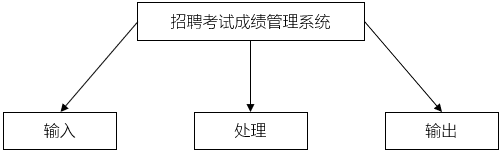
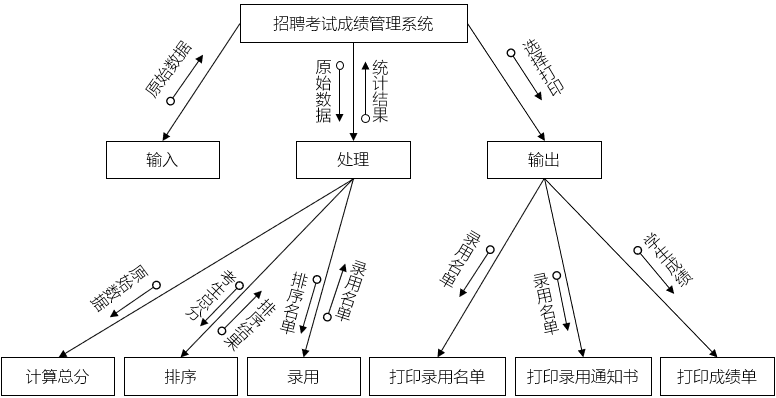
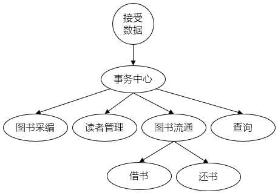
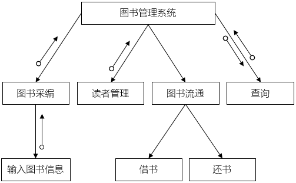

结构图
Structure Chart- Structure Charts - Software Engineering 描述一个软件系统由哪些模块组成
- 不仅描述调用关系，还描述传递的信息和调用方式
- 用来把一个复杂的系统拆解成子系统，子系统再拆解成模块
- 从上到下、从左到右分析
- 它强调的是“分解”，而不是“交互”
- 1. 模块 Module
- 每个模块代表系统中的过程或任务
- 每个模块对外表现为一个黑盒
- 使用矩形 Rectangle 表示
- 命名方法：动词+名词
- 三种类型：
控制模块：使用箭头指向子模块
子模块：子模块是另一个模块的部分
库模块：可重用且可以从任何模块调用
- 2 条件调用 Conditional Call
- 父模块根据条件，选择性 Selection 地调用子模块/if-else
- 使用钻石 Diamond 表示
- 3 循环调用 Repetitive call
- 父模块控制模块根据条件，重复地调用子模块/while/do-while
- 使用曲线箭头 Curved arrow 表示
- 4. 数据流 Data Flow
- 模块之间的数据流
- 它用一个带有空心圆点的有向箭头表示
- 可以使用注释内容说明
- 5. 控制流 Control Flow
- 模块之间的控制流程
- 它由一个带有末端实心圆的指向箭头表示
- 可以使用注释内容说明
- 变换型数据流
- 数据流进入软件系统后，经过一系列的变换，可得到所需的输出结果，这种系统属于变换型数据流
- 呈现为一种 线性 结构
- 对变换型数据流图，要划分出数据输入、数据输出和变换中心3个部分，在数据流图上用虚线标明分界线
- 画出初始的结构图，顶层是主控模块，下层（第一层）一般包括输入、输出、变换3个模块。沿数据调用线标注数据流的名称
- 根据数据流图逐步细化分解输入、输出和变换3个过程，将结构图也细化和优化。根据输入、输出和变换各需要几个模块，逐步由顶向下分解，直至画出每个底层模块为止
- 事务型数据流
- 数据流进入系统后，要分别进行几种不同的处理，这种系统属于事务型数据流
- 呈现为一种 辐射状 结构
- 在数据流图中确定事务中心、接受数据和全部处理路径3个部分
- 画出初始结构图框架，把数据流图的3个部分分别转换为事务控制模块、接受模块和处理模块
- 分解和细化接受分支和处理分支
- 事务中心通常是各条处理路径的起点，由事务中心通往受事务中心控制的所有处理路径
- 向事务中心提供启动信息的路径是系统接受数据的路径，有时不只有一条路径
- 处理路径通常是多条的，每条路径的结构可以不一样，有的可能是变换型，有的则是事务型
- 模块大小要适中，模块的扇入、扇出不能过大
H 图：聚焦系统；强调层级划分
IPO 图：聚焦模块内部的功能定义
HIPO 图：聚焦系统和模块；强调的是功能的分解
SC 图：强调模块之间的接口设计


数据流图（DFD）是“图纸”，而结构图（SC）是根据图纸盖出来的“房子”。变换型和事务型数据流决定了你要盖什么样的房子
招聘考试管理系统


图书管理系统

